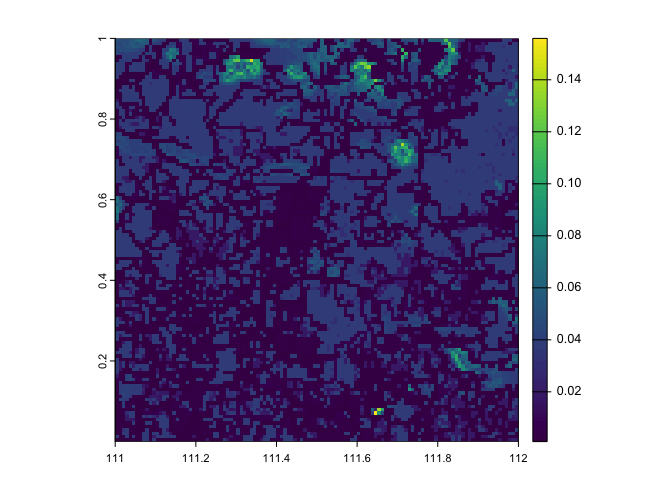
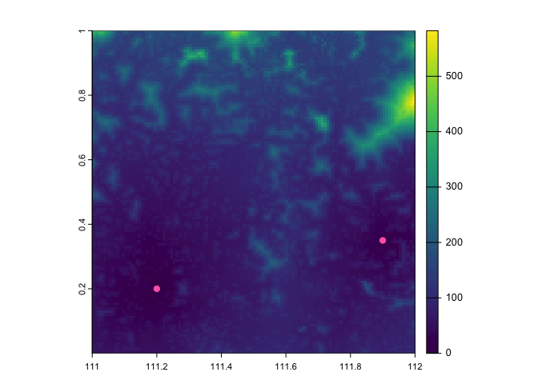
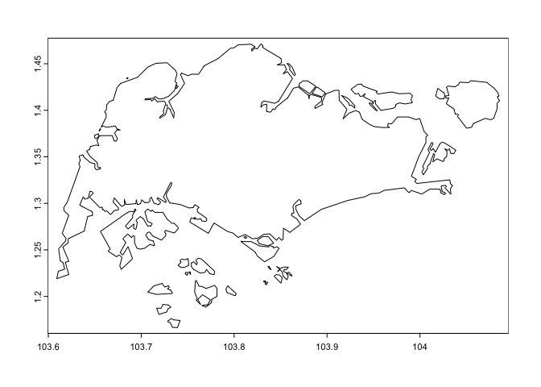
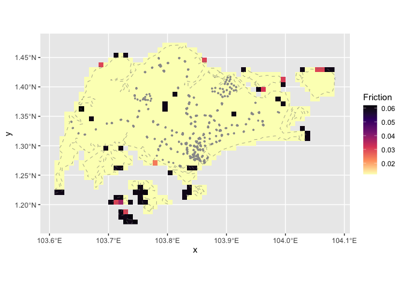
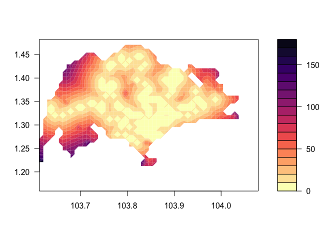

Implements methods from Weiss et al. 2018, 2020 to calculate travel time from given locations over a friction surface.
Citations:
D. J. Weiss, A. Nelson, C. A. Vargas-Ruiz, K. Gligoric, S., Bavadekar, E. Gabrilovich, A. Bertozzi-Villa, J. Rozier, H. S. Gibson, T., Shekel, C. Kamath, A. Lieber, K. Schulman, Y. Shao, V. Qarkaxhija, A. K. Nandi, S. H. Keddie, S. Rumisha, P. Amratia, R. Arambepola, E. G. Chestnutt, J. J. Millar, T. L. Symons, E. Cameron, K. E. Battle, S. Bhatt, and P. W. Gething. Global maps of travel time to healthcare facilities. (2020) Nature Medicine. https://doi.org/10.1038/s41591-020-1059-1
D. J. Weiss, A. Nelson, H.S. Gibson, W. Temperley, S. Peedell, A. Lieber, M. Hancher, E. Poyart, S. Belchior, N. Fullman, B. Mappin, U. Dalrymple, J. Rozier, T.C.D. Lucas, R.E. Howes, L.S. Tusting, S.Y. Kang, E. Cameron, D. Bisanzio, K.E. Battle, S. Bhatt, and P.W. Gething. A global map of travel time to cities to assess inequalities in accessibility in 2015. (2018). Nature. https://doi.org/10.1038/nature25181
Installation
You can install traveltime with:
install.packages("traveltime", repos = c("https://idem-lab.r-universe.dev"))Let’s calculate some travel times
First download a friction surface –— here we are using the motorised travel time from Weiss et al. 2020. We use the function traveltime::get_friction_surface, specify the surface (type) as "motor2020", and provide the spatial extent of interest:
library(traveltime)
library(terra)
#> terra 1.7.83
friction_surface <- get_friction_surface(
surface = "motor2020",
extent = c(111,112,0,1)
)
#> Checking if the following Surface-Year combinations are available to download:
#>
#> DATASET ID YEAR
#> - Explorer__2020_motorized_friction_surface: DEFAULT
#>
#> Loading required package: sf
#> Linking to GEOS 3.12.1, GDAL 3.9.0, PROJ 9.4.0; sf_use_s2() is FALSE
#> <GMLEnvelope>
#> ....|-- lowerCorner: 0 111
#> ....|-- upperCorner: 1 112
friction_surface
#> class : SpatRaster
#> dimensions : 120, 120, 1 (nrow, ncol, nlyr)
#> resolution : 0.008333333, 0.008333333 (x, y)
#> extent : 111, 112, 1.387779e-17, 1 (xmin, xmax, ymin, ymax)
#> coord. ref. : lon/lat WGS 84 (EPSG:4326)
#> source : Explorer__2020_motorized_friction_surface_0,111,1,112.tif
#> name : friction_surfaceLet’s have a look at that SpatRaster:
plot(friction_surface)
Now, prepare points that we would like to calculate travel time from:
from_here <- tibble::tibble(
x = c(111.2, 111.9),
y = c(0.2, 0.35)
)
from_here
#> # A tibble: 2 × 2
#> x y
#> <dbl> <dbl>
#> 1 111. 0.2
#> 2 112. 0.35And calculate the travel time from our points from_here over the friction surface friction_surface using the function traveltime::calculate_travel_time:
travel_time <- calculate_travel_time(
friction_surface = friction_surface,
points = from_here
)
travel_time
#> class : SpatRaster
#> dimensions : 120, 120, 1 (nrow, ncol, nlyr)
#> resolution : 0.008333333, 0.008333333 (x, y)
#> extent : 111, 112, 1.387779e-17, 1 (xmin, xmax, ymin, ymax)
#> coord. ref. :
#> source(s) : memory
#> name : travel_time
#> min value : 0.0000
#> max value : 582.1882Et voila! Here is the motorised travel time in minutes for each cell, with our points in pink.

A more tangible example: Walking in Singapore
Let’s create a map of the walking time across the island of Singapore from the nearest MRT or LRT station.
To do this, we need:
- a map of Singapore
- locations of the stations
Here’s our basemap via geodata:
#install.packages("geodata")
library(geodata)
sin <- gadm(
country = "Singapore",
level = 0,
path = tempdir(),
resolution = 2
)
plot(sin)
We’re going to see how long it takes to walk home from a station, so we’ll download the walking-only friction surface this time by specifying surface = "walk2020.
We can also pass in our basemap sin, a SpatVector, directly as the extent, instead of specifying by hand as above. We’re also only interested in walking on land so we mask out areas outside of sin, that are within the extent of the raster:
library(traveltime)
library(terra)
friction_singapore <- get_friction_surface(
surface = "walk2020",
extent = sin
)|>
mask(sin)
#> Checking if the following Surface-Year combinations are available to download:
#>
#> DATASET ID YEAR
#> - Explorer__2020_walking_only_friction_surface: DEFAULT
#>
#> <GMLEnvelope>
#> ....|-- lowerCorner: 1.1664 103.6091
#> ....|-- upperCorner: 1.4714 104.0858
friction_singapore
#> class : SpatRaster
#> dimensions : 37, 57, 1 (nrow, ncol, nlyr)
#> resolution : 0.008333333, 0.008333333 (x, y)
#> extent : 103.6083, 104.0833, 1.166667, 1.475 (xmin, xmax, ymin, ymax)
#> coord. ref. : lon/lat WGS 84 (EPSG:4326)
#> source(s) : memory
#> varname : Explorer__2020_walking_only_friction_surface_1.1664,103.6091,1.4714,104.0858
#> name : friction_surface
#> min value : 0.01200000
#> max value : 0.06192715The the stations data set in this package contains the longitude and latitude of all LRT and MRT station exits in Singapore1.
head(stations)
#> x y
#> [1,] 103.9091 1.334922
#> [2,] 103.9335 1.336555
#> [3,] 103.8493 1.297699
#> [4,] 103.8508 1.299195
#> [5,] 103.9094 1.335311
#> [6,] 103.9389 1.344999Let’s look at our data now.
Below we plot the friction surface raster friction_singapore, with the vector boundary of sin as a dashed grey line, and stations as grey points:
library(tidyterra)
#> Registered S3 method overwritten by 'tidyterra':
#> method from
#> autoplot.SpatRaster malariaAtlas
#>
#> Attaching package: 'tidyterra'
#> The following object is masked from 'package:stats':
#>
#> filter
library(ggplot2)
ggplot() +
geom_spatraster(
data = friction_singapore
) +
geom_spatvector(
data = sin,
fill = "transparent",
col = "grey50",
lty = 2
) +
geom_point(
data = stations,
aes(
x = x,
y = y
),
col = "grey60",
size = 0.5
) +
scale_fill_viridis_c(
option = "A",
na.value = "transparent",
direction = -1
) +
labs(
fill = "Friction"
)
OK, now we want to calculate the walking travel time in minutes across the friction surface from the nearest station exit:
travel_time_sin <- calculate_travel_time(
friction_surface = friction_singapore,
points = stations
)
travel_time_sin
#> class : SpatRaster
#> dimensions : 37, 57, 1 (nrow, ncol, nlyr)
#> resolution : 0.008333333, 0.008333333 (x, y)
#> extent : 103.6083, 104.0833, 1.166667, 1.475 (xmin, xmax, ymin, ymax)
#> coord. ref. :
#> source(s) : memory
#> name : travel_time
#> min value : 0
#> max value : InfEt voilah — a raster of walking time from the nearest station.
contour(
x = travel_time_sin,
filled = TRUE,
nlevels = 20,
col = viridis::magma(19, direction = -1)
)